A MacBook watches my right hand through the webcam. When I open my hand with fingers pointing up, the drone climbs. Fingers down, it descends. Fist, it hovers. Under the hood, a Raspberry Pi Pico W is hot-wired into a Holy Stone HS210 remote, feeding voltage straight into the throttle stick's wiper pad like a robot thumb.
The idea
Toy drones like the HS210 don't expose an API — the only way in is the physical remote. But the remote's throttle stick is just a potentiometer: the drone's chip reads a voltage between 0 and 3.3 V off the stick's wiper and translates it to thrust. So instead of reverse-engineering the radio protocol, iDrone impersonates the stick. A digital-to-analog converter is soldered onto the wiper pad and drives whatever voltage the hand-tracking pipeline asks for.
How it works
The whole system is a straight line from the webcam to the drone:
- Mac side — OpenCV pulls webcam frames and MediaPipe's hand-landmark model tracks the right hand. For each of the four main fingers, a vector from base joint to fingertip is measured against vertical: all four within 45° of up → climb (throttle 4095), all four down → descend (0), anything else — a fist, disagreement, no hand — → hover (2048). An EMA with ~300 ms ramp keeps the throttle gliding instead of snapping, and the values stream over USB serial at 115200 baud.
- Pico side — a MicroPython script reads the serial packets and writes the throttle to an MCP4728 DAC over I²C. The DAC's channel A is soldered to the remote's throttle wiper pad, sharing ground with the remote's PCB.
- Safety — a 500 ms watchdog on the Pico: if a fresh packet doesn't arrive in half a second (the Mac stalls, the cable wiggles), every channel snaps back to hover instead of doing something unpredictable.

Things learned the hard way
- The PCB mirrors left/right when you flip it over. Solder pad identity is not where intuition says it is — multimeter everything before touching the iron.
- Binding needs the physical pots. Cut the joystick out of the circuit and the bind handshake silently fails. The trick is to leave the stick electrically intact — the DAC wins during flight because it's a stiffer voltage source than the pot.
- The drone's chip pulses its ADC reads through the wipers. The weird ~300 mV jitter on the throttle pad is the sampling pattern, not a broken board.
- The watchdog is load-bearing. It's the difference between a hobby hack and something safe enough to fly indoors.
Honest limits
It's throttle only — the hand controls altitude while pitch, roll, and yaw stay on the physical sticks. Hover drifts, because there's no closed-loop position control. And it's a $40 toy drone, so it's indoors-only in practice. The next step is four-axis gesture control: pitch, roll, and yaw all on the hand.
The full build guide — bill of materials (~$96 in parts), soldering steps, firmware, and the hand-tracking code — is MIT-licensed at github.com/pattssun/iDrone. The repo is written so you can drop it into an AI coding agent and ask it to walk you through the build — that's how it was built in the first place.